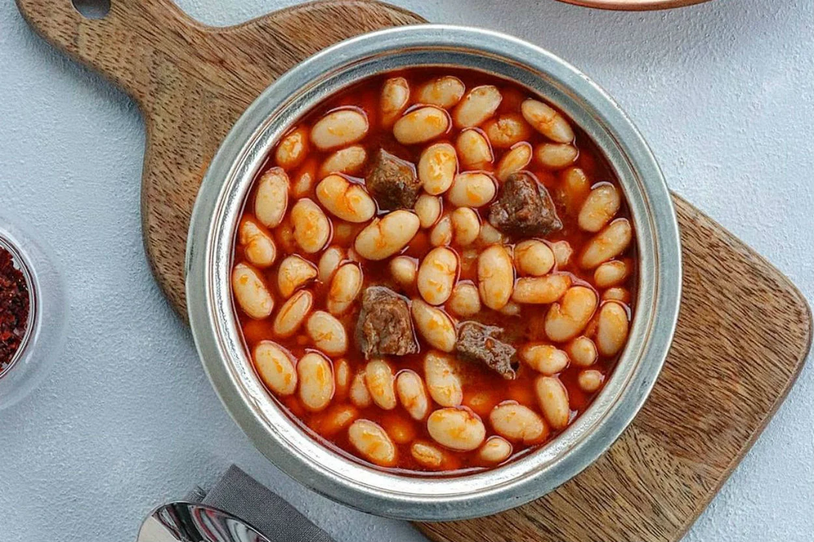
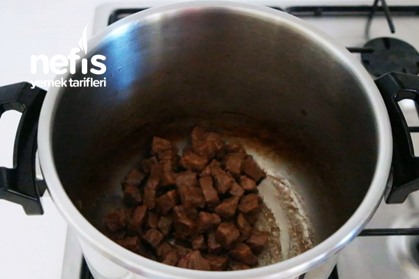
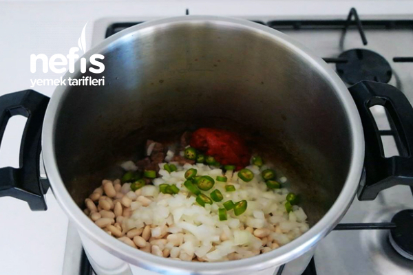
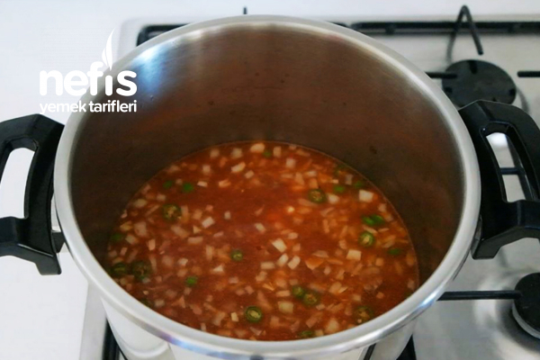
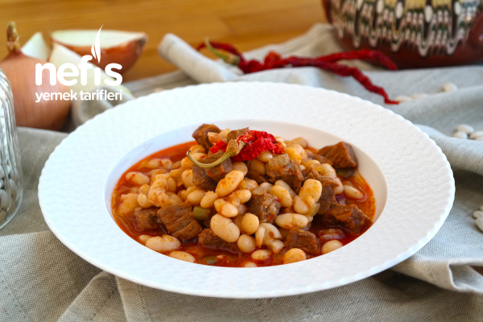

White Bean Stew With Meat

Description;
I would like to introduce you to this flavor that will remain in your palate, which is consumed at most tables in Turkey.
This dish, which is usually used on rice in Turkish cuisine, reaches our tables in all seasons with its unique taste.
Ingredients;
- 2 cups dried beans
- 300 g of cubed beef
- 1 onion
- 1 green pepper
- 1 tablespoon tomato paste
- 1 teaspoon of hot pepper paste
- Salt
- 4, 5 -5 glasses of hot water
- Very little oil
- 1 sugar cube
Steps;
- Soak the dried beans with cold water in the evening, drain the water the next day and wash them thoroughly.

- On the other hand, put the meat in a pressure cooker with a little oil and roast it over high heat until it turns color.

- When it is roasted, add the dried beans into it.
- We also chop the onion and pepper, add the tomato paste and mix.

- We add about 4.5 -5 glasses of hot water, enough to slightly cover the beans.

- Add salt and sugar, mix and close the lid.
- Cook over high heat until the whistle blows, then lower the whistle and cook over medium heat for 30 minutes.
- Cooking time may vary depending on the freshness of the beans.
- After 30 minutes, it is useful to check. If it is not cooked, you can boil it again a little more.
- I use the beans without boiling them, this way they are much more vitaminized and taste better.
